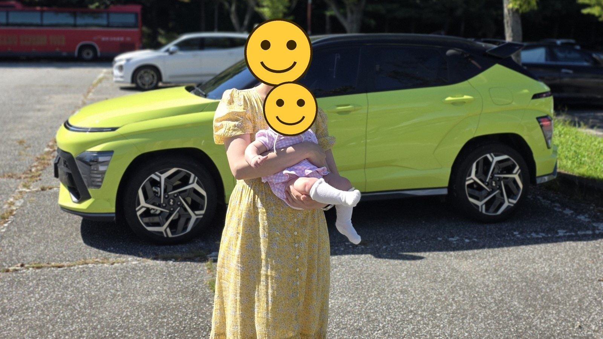

기획서 · 접수양식 02 순서
쏙 SSOK
세워 둔 내 차 안에서, 내 차 핸들로 주차 연습
현대자동차그룹 차량용 앱 개발 공모전 · 일반 부문 · Pleos Connect
01앱 한 줄 소개
주차해 둔 내 차 안에서 내 차 핸들을 돌리며, 내 차 치수의 가상 차로 후방카메라·어라운드뷰 화면 읽는 법과 주차를 연습하는 앱.
쏙. 한 번에 깔끔하게 들어가는 소리입니다. 그 소리를 그대로 적은 SSOK, 네 글자가 곧 주차 순서입니다. S Signal, 비상등을 켜서 주차할 것임을 주변에 알립니다. S Stop, 핸들을 돌릴 자리에 멈춥니다. O Orbit, 천천히 선회합니다. K Keep, 유지하며 선을 맞춰 정지합니다. 쏙하고 들어오면 주차 끝! 주차는 일단 규칙으로 외우고 몸으로 익히는 게 좋지만, 정답은 없습니다. 자신에게 맞는 방법을 찾아보세요.
02기획 배경
계기 · 제 이야기
- 스물여섯 즈음 면허, 그 뒤 10년 가까이 장롱면허. 2년 전 결혼하고 도아가 태어나 중고차(노란 코나)를 샀습니다.
- 도로는 며칠이면 됐는데 주차는 끝까지 안 됐습니다. 지하주차장에서 기둥 옆 칸은 그냥 지나쳤고, 뒤에 차가 서면 식은땀이 났습니다.
- 기둥 옆 칸에 후진으로 넣다가 뒷문을 기둥에 긁어 찌그러뜨렸습니다. 후방카메라를 보고 있었는데도요. 선이 있는 건 알았지만 그 선이 무슨 뜻인지, 핸들을 언제 풀어야 하는지 몰랐던 겁니다.

30.2%
물적 사고 중 주차 사고. 그중 후진 53.8%
보험개발원 2017 · 2012~14년 사고
절반↑
기능시험 탈락자 중 직각주차(T자)에서 탈락
시험장 관계자 발언 · 인사이트 보도
56%
후방카메라만 있어도 정지 더미와 충돌
IIHS 2014, n=111
8~12%
후진 시간 중 화면을 보는 비율
NHTSA 2008
15회
4카메라 주차 화면이 손에 익기까지 걸린 시행 수
UMTRI 2004 · n=16
숫자로 본 문제
- 후진하다 사람을 치는 사고로 미국에서만 해마다 210명쯤 목숨을 잃고, 그중 31%가 다섯 살 아래 아이. 미국이 후방카메라를 의무화한 이유인데, 카메라가 있어도 보고 멈추지 않으면 소용이 없습니다. 그래서 사람이 갑자기 튀어나오는 상황을 넣었습니다.
- NHTSA 2024 보고서: 초보든 아니든 안내선을 노면에 겹쳐 읽는 훈련이 필요하다.
연습할 데가 없다
- 세워 둔 차에서 후방 모니터는 R에 넣어야만 켜지고, 어라운드뷰는 P로 바꾸면 꺼집니다.
- 방문 연수는 열 시간에 58만 원. 불법 방문연수 단속이 2년 만에 180건에서 402건으로 는 만큼 수요가 비어 있고, 2025년 말 시행령 개정으로 방문 연수가 제도 안에 들어왔습니다.
- 폰 주차 게임은 손가락으로 핸들을 돌리니 몸에 남지 않습니다. 저도 유튜브를 보고 빈 주차장을 찾아다녔지만 아이를 태우고 그럴 시간은 잘 나지 않았습니다.
그래서
- 차가 서 있을 때, 그 차 핸들로 주차를 연습하게 하자.
- 플레오스 차는 핸들 각도·깜빡이 레버·브레이크·비상등을 앱이 읽을 수 있습니다. 그 신호로 화면 속 내 차를 움직이고, 내 차와 같은 비율의 후방카메라·사이드미러·어라운드뷰를 그려 줍니다.
- 기둥을 긁기 전에 화면 속 선이 무슨 뜻인지 몸으로 알게 하는 것, 그게 이 앱이 하려는 일입니다.
출처: 보험개발원 주차사고 통계(2017, 2012~14년 사고), 도로교통공단 시험장 관계자 보도, IIHS Status Report 49(2), NHTSA DOT HS 811 024, NHTSA FMVSS 111 final rule(2014) backover 통계, UMTRI-2004-17 4-camera parking study, NHTSA 2024 RVS older drivers, 세계일보 2025-09, SBS Biz 2025-12.
03주요 기능과 차량 특화 요소
S
Signal
비상등을 켜서 주차할 것임을 주변에 알립니다.
S
Stop
핸들을 돌릴 자리에 멈춥니다.
O
Orbit
천천히 선회합니다.
K
Keep
유지하며 선을 맞춰 정지합니다.
| 기능 | 한 줄 |
|---|---|
| 내 차 핸들 = 게임 핸들 | 조향각을 실시간으로 읽어 가상 차 바퀴가 같이 꺾입니다. |
| 오토 차 주차 그대로 | 밟은 채 시작 · 레버로 D/R · 떼면 크리핑 · 밟으면 정지. 가속 페달 없음. |
| 내 차 치수 | 전장·전폭·휠베이스·조향 기하가 차종(아반떼·그랜저·투싼)대로. |
| 차 화면 한 장(가로) | 앱 독 · 상태 바 · 위 [카메라][어라운드뷰] · 아래 [핸들 · 기어 · 조작부][사이드미러 하나]. |
| 쏙 공식 S·S·O·K | Signal → Stop → Orbit → Keep. 앱 이름이 곧 주차 순서, 쏙하고 들어오면 주차 끝. |
| 칸이 앞에 보일 때 시작 | 비상등 → D 로 지나쳐 자리 잡기 → R 로 넣기가 기본. |
| 스테이지 15 + 자유 연습 | 유형 4 × 난이도 3 × 옆 차 3 × 좌우 칸. 졸업 코스 3개 합계. |
| 돌발 | 중급부터 보행자 · 아이 · 쇼핑카트. 브레이크면 통과, 가면 사고. |
| 매번 다른 상황 | 시작 자세 · 옆 차 자리 · 차종 · 색 · 지하/지상/밤/비가 번호로. |
| 시연으로 가르침 | [시연 먼저 보기] = 같은 상황에서 차가 공식대로 스스로 주차. |
| 공식은 외우게 하지 않음 | 코치 문구 초급만 · 중급 [힌트] · 고급 끔(돌발·충돌 경고는 늘). |
| 기록과 리더보드 | 주행 시간 + 패널티(충돌 5 · 사고 15 · 보정 3 · 비상등 2초). |
| 리플레이 | 탑뷰에 내 궤적(파란 실선)과 공식 궤적(흰 점선)을 겹쳐 비교. |
| 거울부터 | 사이드미러를 끌어 각 맞추기. 차체 1/5 · 뒷바퀴 · 주차선이 보이면 통과. |
| 오늘의 상황 | 날짜가 번호라 모두 같은 자리에서 기록을 겨룸. |
| 안전 설계 | P 에서만 실행 · 5분 세션 · 핸들 가득 유지 요구 없음 · 연습 화면 표시. |
차에서만 되는 이유
- 폰·태블릿은 내 차 핸들이 몇 도 돌아갔는지, 깜빡이를 어느 쪽으로 올렸는지, 브레이크를 밟고 있는지 모릅니다. 쏙은 Pleos Vehicle SDK로 그 신호를 읽기만 하고 제어는 하지 않습니다.
- 화면 속 차는 아반떼·그랜저·투싼 실제 치수. "핸들을 어디서 풀어야 하는지" 같은 감각이 진짜 차로 옮겨집니다. 실제 카메라 영상은 서드파티 앱에 열리지 않고 P에서는 꺼지므로 재현이 유일한 길이고, 어라운드뷰가 없는 트림에도 같은 화면을 줍니다.
화면 · 진짜 차의 구도
- 플레오스 홈처럼 흰 바탕, 선 아이콘, 둥근 카드. 차가 밤 모드면 화면도 어두워집니다.
- 위 줄: 후방(또는 전방)카메라 + 어라운드뷰. 아래 줄: 운전석 조작부(핸들 · 기어 · 계기판/P·비상등·라디오/페달) + 사이드미러 하나. 실제로도 거울은 한 번에 한쪽만 보므로 칸 쪽 거울이 먼저 보이고, 한 번 누르면 반대쪽, 끌면 각도, 두 번 누르면 원위치.
- 조작부: 핸들 앞 슬림 계기판(시간 · 깜빡이 · 속도 · P R N D · 핸들 각도), 왼손 핸들, 현대 컬럼식과 같은 방향의 기어(위로 D · 아래로 R · 끝에 P), 오른손 비상등과 가로로 넓은 브레이크 페달, 연주곡 라디오 카드(안내 음성이 나오면 저절로 작아짐).
- 카메라: 광각 어안, 조향에 따라 휘는 노란선, 0.5·1·2.3 m 표시(현대 취급설명서 기준). 어라운드뷰: 8방향 주차 거리 경고 띠, 후측방 경고.
- 사이드미러: 상자가 아니라 실제로 비치는 내 차 옆구리(도어 패널·어깨선·뒷바퀴·휠·창 띠). R을 넣으면 양쪽이 내려가고, 끌면 각도, 한 번 누르면 잠깐 크게(고개 돌려 보기).
- 주차 거리 경고음(0.3 m 안은 연속음)·후진 경고음·돌발 경보·충돌음을 합성해 내고, 코치 문장은 음성으로도 읽습니다.
연습 구성
- 15 스테이지: 후면 직각·전면 직각·평행·사선 45° × 난이도 셋. 칸 크기는 주차장법 시행규칙(초급 연습용 3.0×5.5 · 차로 9 · 뒤 벽 1.5 m, 중급 2.5×5.0 · 차로 6.5, 고급 2.3×5.0 m · 차로 6.0 · 시작 자세 흔들림 ±0.4 m·4°). 초급은 법정보다 넓게 두어 처음엔 여유 있게.
- 옆 차 없음·양옆·기둥으로 갈리고, 고급은 밤이나 비. 시작 자세·옆 차·차종·색·지하/지상/밤/비가 상황 번호로 매번 바뀝니다. 같은 번호면 같은 장면이라 "같은 상황 다시"가 됩니다.
- 오늘의 상황(날짜가 번호라 그날은 모두 같은 자리에서 기록 경쟁), 졸업 코스(초·중·고 하나씩 연속), 자유 연습.
- 중급부터 보행자·아이·쇼핑카트가 경로를 가로질러 나옵니다. 보이는 순간 브레이크면 통과, 그냥 가면 사고.
- 전면 직각은 옆 차가 있으면 한 번에 안 들어가는 기하라 "한 번 빼서 보정"을 그대로 가르칩니다(차로 6.5 m인 이유는 부록).
가르치는 방식
- 세 모드: [시연 보기]는 같은 상황에서 차가 공식대로 혼자 주차하는 걸 자막·음성으로 보여 주고 핸들을 잡으면 내 차례(운전연수의 "선생님이 한 번 보여 주기"). [연습하기]는 "비상등을 켜 보세요"처럼 한 단계씩 시키고, 한 것을 확인하면 ✓와 함께 다음 단계로 넘어갑니다(어라운드뷰에 "여기서 멈춤" 점선). 기록은 남지 않습니다. [점수 모드]는 코치 없이 기록과 패널티.
- 첫 진입 화면 안내: 카메라 → 미러 → 핸들 → 기어 → 브레이크 → P 여섯 단계를 하나씩 비춰 줍니다. 도움말 페이지와 초보 팁(타기 전 준비, 후방카메라 선 읽기, 주차 전 순서) 별도.
- 코치: 연습하기는 늘, 점수 모드는 끔. 돌발·충돌 경고는 늘. 돌발은 글이 아니라 화면 속 사람·아이·카트가 걸어 나옵니다(위에서 본 화면에도 어깨와 머리). 공식은 받아 적게 하지 않고, 끝난 뒤 공식과 비교합니다.
- 결과: 위에서 본 리플레이에 내 길(파란 실선)과 공식 길(흰 점선)을 겹쳐 어디서 핸들을 일찍 풀었는지 한눈에. "핸들을 돌린 자리가 공식 자리보다 0.6 m 늦었어요", 전후진 보정 횟수, 비상등 여부. "내려서 보면" 왼쪽·오른쪽·뒤 간격 cm.
- 타기 전 준비: 옆에서 본 운전석을 끌어 의자 위치·핸들 높이·거리를 맞춥니다(무릎 굽힘 18~38° · 손목이 림 위 · 계기판이 안 가림). 룸미러는 뒷유리가 한가운데 오게, 사이드미러는 차체 1/5·뒷바퀴·옆 칸 주차선이 보이게. 넷 다 ✓면 거울 때문에 긁을 일은 줄어듭니다.
기록 · 안전
- 기록 = 주행 시간 + 패널티(충돌 5초 · 사람·카트 사고 15초 · 공식보다 많이 왔다 갔다 3초 · 비상등 안 켬 2초). 속도가 크리핑으로 고정이라 경로와 멈춤의 게임. 무충돌·사고 0·돌발 전원 멈춤이면 CLEAN. 스테이지 × 차종별 기록(1차는 기기 안).
- 기어 P일 때만 동작, P를 벗어나면 바로 멈춤. 한 번에 5분. 핸들을 끝까지 돌린 채 오래 버티게 하는 코스 없음(조향 모터 보호). 화면에 늘 "연습 화면" 표시.
04주요 사용 시나리오
시나리오 1 · 주차가 무서운 사람(저 같은)
- 장롱면허 10년 뒤 가족이 생겨 중고차를 산 사람. 토요일 오후, 아이를 재우고 아파트 지하주차장에 세워 둔 차에서 앱을 켭니다.
- "오늘은 기둥 옆 후면주차예요." 카메라·어라운드뷰·양쪽 미러가 한 화면에 뜹니다.
- 비상등 → D로 칸을 지나쳐 멈춤 → R. 브레이크를 떼면 차가 슬슬 뒤로, 핸들을 돌리면 노란선이 휩니다. "노란선이 주차선 안에 들어오면 핸들을 풀어요."
- 빨간선이 기둥에 닿으면 경고음. 브레이크로 세우고 D로 뺀 뒤 다시 넣습니다. 다 됐으면 멈추고 P.
- 결과: 내 길과 공식 길이 겹친 그림. "핸들을 돌린 자리가 공식 자리보다 0.6 m 늦었어요." 그때 기둥을 긁은 이유가 그 한 장에 있습니다. 내려서 보면 왼쪽 40 cm, 오른쪽 31 cm.
- 8번 스테이지에서는 후진 중 사람이 걸어 나옵니다. 밟으면 "잘 멈췄어요", 그냥 가면 사고로 남습니다.
- 일주일 뒤 같은 주차장에서 진짜 후방카메라를 보는데, 같은 선이 보입니다.
시나리오 2 · 차를 바꾼 사람
- 아반떼에서 그랜저로. 차가 30 cm 길어지고 회전반경도 커졌습니다.
- 차종을 그랜저로 바꾸면 화면 속 차와 안내선이 그랜저 치수로 바뀝니다. 예전처럼 핸들을 풀었더니 이제는 늦다는 걸 리플레이가 보여 줍니다.
시나리오 3 · 카셰어링
- 처음 타는 쏘카 차에 앉아 출발 전 1분, 그 차 치수로 한 번 넣어 보고 나갑니다.
05개발 계획 · SDK/API
| 신호 | Pleos Connect SDK | 권한 | 용도 |
|---|---|---|---|
| 조향각 | SteeringWheel.registerSteeringWheelAngle | CAR_DRIVE | 가상 차 조향 |
| 방향지시등 | TurnSignal.registerTurnSignalState | CAR_LIGHTS | 가상 기어: 레버 위 D · 아래 R · 가운데 N(컬럼 변속기와 같은 방향) |
| 브레이크 | Brake.registerBrakePedalStatus | CAR_DRIVE | 밟은 채 시작 · 떼면 크리핑 · 밟으면 정지 |
| 비상등 | AAOS HAZARD_LIGHTS_STATE (CarPropertyManager) | android.car.permission.CAR_EXTERIOR_LIGHTS | 주차 전 비상등 습관 · 안 켜면 +2초. SDK TurnSignal 엔 없어 AAOS 표준 속성으로 읽음 |
| 기어 | AAOS GEAR_SELECTION (+ Pleos Gear) | CAR_POWERTRAIN | P 감시 |
| 음성 | TTS (코칭 문장) | — | 단계 안내 |
원칙 · 차 모델
- 읽기 전용 신호 다섯 가지(조향각·깜빡이·브레이크·기어·비상등)만. 제어 API·카메라·위치는 쓰지 않아 실현 가능성 리스크가 없습니다.
- 가상 차는 저속 자전거 모델(핸들 각 ÷ 조향비 = 바퀴 각, 회전반경 = 휠베이스 / tan δ). 카메라·미러는 핀홀 투영 + 어안 왜곡, 안내선 간격은 현대 취급설명서의 0.5·1·2.3 m.
- 정차 전용 미디어 앱 정책(DO 미선언, P 이탈 시 종료, 상태 복원). 한 번에 5분, 핸들을 끝까지 돌린 채 버티게 하는 코스 없음.
일정
| 주차 | 할 일 |
|---|---|
| 1주 | 에뮬레이터·Virtual Console 구축, 조향각 단위·부호·주기·해상도 실측, 신호 4종 구독, 운동 모델·탑뷰·코스 1 |
| 2주 | 후방·전방카메라 화면 재현(가이드라인 기하), 스테이지 15개 + 자유 연습, 돌발(보행자·아이·카트), 기준점 코칭·음성, 리플레이 |
| 3주 | 앱 화면을 시안과 같은 가로 4분할(미러·카메라·어라운드뷰)로, 데모 모드, 시연 영상·README·release APK, 기획서 |
지금 상태
- Vehicle SDK 2.3.2로 release APK 빌드, Pleos Connect 에뮬레이터 2.1.0(API 34 Automotive)에 설치해 화면이 뜨는 것 확인.
- 15 스테이지 × 차종 3이 공식대로 조작했을 때 부딪히지 않고 들어가는지 Kotlin 테스트 18개와 브라우저 검사로 확인. 주차 완료 → 기록 저장 → 다음 스테이지까지 돌리는 실행 테스트(Robolectric)와 낮·밤 화면 스냅샷(Paparazzi)을 고칠 때마다 다시 실행.
- 조향각 부호·비상등 속성 실측은 접수 뒤 첫 주. 12월 초 2차 발표 전 APK·시연 영상·README 마무리, 전시 대비 구동 안정화.
다음
- 다음 버전 · 차선 변경. 깜빡이 → 사이드미러 확인 → 핸들 살짝 → 복귀. 주차와 같은 신호(깜빡이·조향각·브레이크)로 되고, 초보가 주차 다음으로 무서워하는 게 차선 변경입니다.
- 제어 SDK가 열리면 시트·미러 위치를 코스에 연동. Gleo에 "주차 연습 켜 줘" 등록.
- 차종 프리셋을 플레오스 탑재 차와 기아 차로 확대. 운전연수 업체·쏘카 온보딩 B2B.
06기대효과 · 발전 가능성
타깃을 한 줄로 쓰면 주차가 무서운 사람 전부입니다. 초보만이 아닙니다.
| 세그먼트 | 규모·근거 |
|---|---|
| 초보(신차·중고차) | 신규 면허 88.5만 명/년(10·20대 80%). 첫차의 64%가 중고차, 이유 1위 '운전 미숙' 53%(오토벨 1,148명) |
| 장롱면허 재시작 | 연수 10시간 58만 원, 불법 방문연수 단속 180→402건(2년), 2026-01 방문연수 합법화, 쏘카 교육용 차량 운영 |
| 차를 바꾼 사람 | 신차 169.5만 + 중고 약 226만 대/년 = 연 약 400만 '새 차 적응'(추정). 영국 62% "큰 차 주차 어렵다" |
| 카셰어링·렌터카 | 쏘카 1,000만 회원, 차대차 사고 91%(일반 76%). 쏘카는 Pleos 25(2025.3)에서 첫 양산차부터 쏘카 서비스를 함께 론칭한다고 발표 |
| 시니어 | 65세+ 면허 563만. 페달 오조작 567건 중 60세+ 70.5%, 최다 유형 '상가 돌진'(주차·후진 저속) |
| 해외 | 영국 32% 평행·후진주차 회피, 미국 49% 평행주차 공포 → 2030년 2,000만 대 확장 서사 |
MAU(범위로)
- 설치 기반 = 플레오스 커넥트 탑재 차. 더 뉴 그랜저 2026년 5월 출시, 9월 국내 8,898대. 디 올 뉴 아반떼 하반기(7세대 월 7,305대).
- 2026년 말 8~9만 대, 2027년 말 추가 차종까지 25만 대 전후.
- 설치율 10~30% × 월 활성 30~50% → 2027년 말 MAU 1만~4만. 앱 마켓 통계가 공개된 게 없어 점이 아니라 범위.
Retention · 졸업하는 앱
- 잔존율 대신 코스 졸업률과 다시 돌아오는 계기(차 교체, 가족 프로필, 100일 복습, 오늘의 상황)로 정의.
- 오늘의 상황·졸업 코스·리더보드가 다시 켜게 만드는 장치.
수익
- 기본 코스 무료, 고급 코스 유료. 연수 한 시간 5~6만 원이 가격의 기준점.
- B2B: 운전연수 업체, 쏘카 온보딩. 보험 연계: 주차 사고가 물적 사고 보험금의 25.7%.
현대차그룹에 주는 가치
- 자동주차 기능을 써 본 적 없거나(47%) 쓰다 만(8%) 사람이 55%, 그중 28%가 "사용법을 몰라서"(J.D. Power). 이 앱이 그 기능의 온보딩이자 전시장 체험 콘텐츠.
- 2030년 플레오스 2천만 대. 같은 앱이 그대로 늘어납니다.
07참고자료
- 브라우저 미리보기(앱과 같은 수식, 가로): ssok.hojun.app/preview · 소개 페이지 ssok.hojun.app
- 설명서·안전 조건: ssok.hojun.app
- GitHub 저장소(소스 + release APK + README): 접수 시 링크 기재
- 시연 영상 87초 · 화면 캡처 7장(홈 · 연습하기 단계 안내 · 미러 반대쪽 · 결과 · 밤 돌발 · 타기 전 준비 · 첫 진입 화면 안내)
08숏폼
선택. 시연 영상과 같은 소재로 30~60초 세로 영상. "핸들을 돌리면 화면 속 차가 쏙" 한 장면.
부록예상 질문과 답
- 서 있는 차에서 핸들을 돌리면 타이어·조향계가 상하지 않나?
- 현대 EPS는 가득 돌려 잡고 있으면 과부하 보호에 들어갑니다. 그래서 한 세션 5분, 가득 유지를 요구하는 코스 없음, 가상 차가 움직일 때만 돌리도록 안내, 시작 시 주의 문구를 둡니다. 시동 ON·P·주차 브레이크 상태에서만 씁니다.
- 연습하면 실제로 주차를 잘하게 되나?
- 시뮬레이터 연습의 전이 연구는 결과가 엇갈립니다. 이 앱은 '실력 증명'이 아니라 '내 차 핸들 감각'과 '카메라 화면 읽기'를 익히는 도구로 씁니다. 화면 읽기 훈련의 필요성은 NHTSA·IIHS·UMTRI 연구가 뒷받침합니다.
- 실제 카메라 영상을 쓰면 더 좋지 않나?
- 서드파티 앱에는 카메라 영상이 열리지 않고(AAOS EVS는 시스템 전용), 후방 모니터는 R에서만·어라운드뷰는 P에서 꺼집니다. 재현이 유일한 길이고, 어라운드뷰 없는 트림(아반떼 대부분)에도 같은 화면을 줄 수 있습니다.
- 게임인데 사업성은?
- 세그먼트 합산(초보·장롱면허·차 교체·카셰어링·시니어), 보험 주차사고 손해, HMG 주차 보조 옵션 사용률과 업셀, 연수·쏘카 B2B. 숫자는 위 표.
- 전면 주차 스테이지는 왜 차로가 6.5 m인가?
- 앞바퀴가 조향하는 차는 전진으로 들어갈 때 앞 바깥 모서리가 크게 돌아 옆 차를 쓸고 지나갑니다. 운동학 모델로 확인하면 6 m 차로에서는 옆 차가 양쪽에 있을 때 한 번에도, 한 번 빼서도 들어가는 조합이 없습니다(그랜저 기준). 6.5 m에서 '지나쳐서 35° 꺾고 2 m 빼기'가 세 차종 모두(옆 차가 그랜저여도) 통합니다. 40°는 그랜저 옆 차에서 8 cm 모자라 60조합 실측으로 35°로 정했습니다. 그래서 전면 스테이지는 6.5 m로 두고, 코칭에 보정을 넣었습니다. 후면이 쉬운 이유를 몸으로 알게 됩니다.
- 차종은 어떻게 아나?
- CarInfo는 VIN·CRN만 주고 외부 치수를 주지 않아 프리셋(아반떼·그랜저·투싼)에서 고릅니다. VIN 디코딩으로 자동 선택은 2차.
- Pleos 정책(정차 전용 게임)에 맞나?
- 미디어 앱 분류로 DO 미선언, P 이탈 시 종료, 상태 복원, 주행 중 UI 없음. 42dot은 게임 카테고리 확대를 공식 발표했습니다.